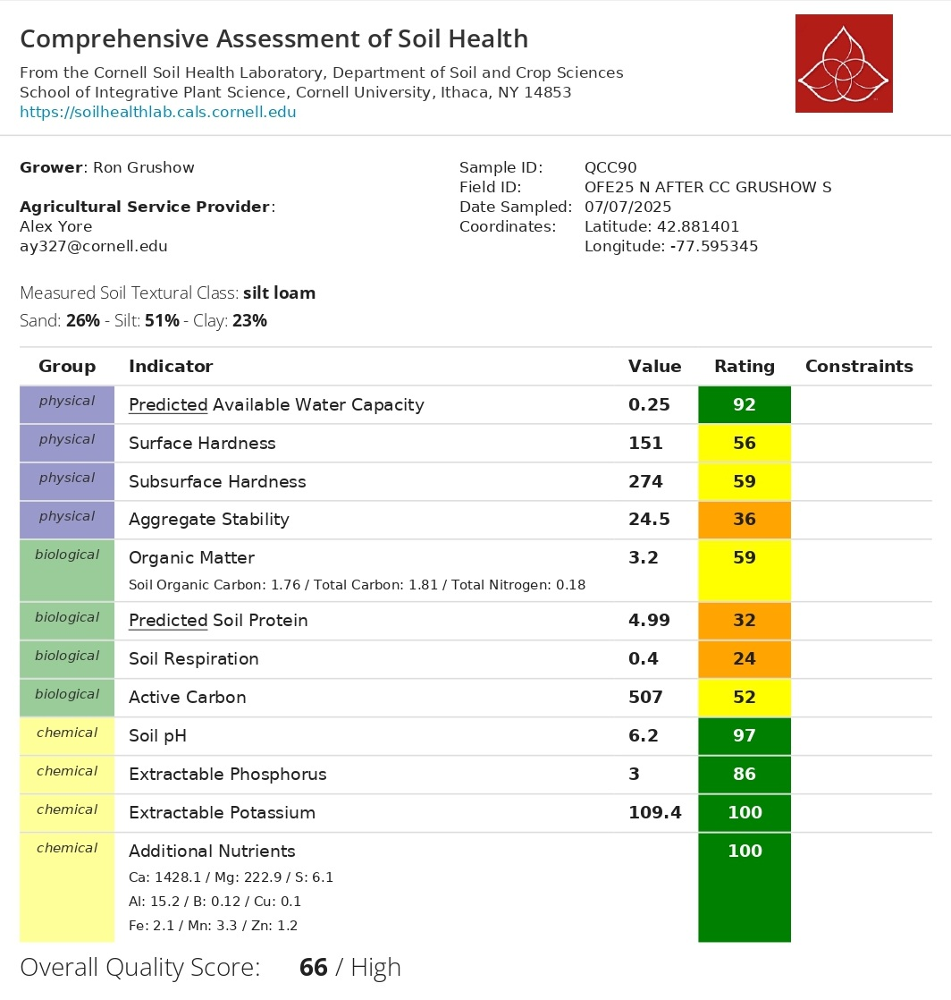
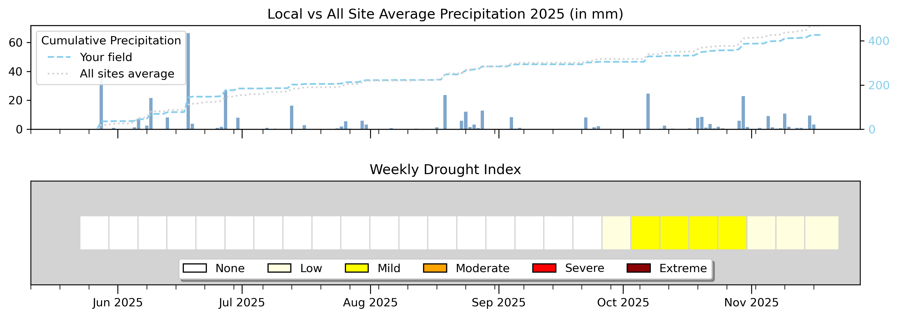

| Metric | Value | SD |
|---|---|---|
| 🌽 Maize Biomass - Mean %N | 3.614% | ± 0.406 |
| 🌽 Maize Biomass - C:N Ratio | 12.4 | ± 1.61 |
| 🌱 Cover Crop - Mean %N | 2.268% | ± 0.115 |
| 🌱 Cover Crop - C:N Ratio | 20.52 | ± 1.03 |
| 🌿 Soil Health Score | 66 / 100 | — |
YOUR OFE 2025 REPORT

Welcome to your 2025 farm report. This report summarizes field-season measurements for the M4F2S2 field. Because this field ran under a single nitrogen rate of 163 lb N/ac with no treatment or control strips, we’re not comparing two systems here, instead, we’re giving you a field-level picture of how the corn crop performed, what the cover crop residue looked like going into the season, and what the soil health assessment tells us about the foundation you’re working with. Think of this as your baseline.

Take-home message: The corn crop across this field showed high and consistent nitrogen status mid-season, with tissue nitrogen averaging 3.614% across the sampled points, reflecting strong crop nitrogen uptake at the 163 lb N/ac input rate. The cover crop residue had a C:N ratio of 20.52, placing it in the moderate range, decomposition will be gradual, with nitrogen releasing steadily through the season rather than all at once. The soil health assessment returned an overall score of 66/100 (High). Chemical indicators are excellent across the board. The main areas to watch are biological and physical structure: soil respiration (24), predicted soil protein (32), and aggregate stability (36) are all in the Low range, and surface and subsurface hardness are at medium functioning. These are the indicators that improve most with reduced tillage and continuous cover cropping over time.
Results Summary
This field did not have a treatment/control split. All statistics are descriptive field-level observations. No statistical comparisons between groups are reported.
🌽 C:N in Corn Biomass
Corn biomass was collected from 8 points across the South field and sent to the laboratory for C:N analysis. This tells us how much nitrogen the plant had absorbed and incorporated into its tissue mid-season, a direct indicator of nitrogen sufficiency at the 163 lb N/ac input rate. Because there is no treatment split, we describe the field-level distribution and spatial variability across points.
Total Nitrogen in Biomass (%N)
C:N Ratio — Biomass
Mean C:N — Biomass
12.4
SD: 1.61 | SE: 0.57
🌱 Cover Crop C:N
5 cover crop samples were collected from field M4F2S2 and analyzed for C:N content. The C:N ratio of cover crop residue tells us how quickly it will break down and release its nitrogen to the following corn crop. A C:N below 25 means decomposition happens relatively fast, the nitrogen becomes available early in the season, right when the young corn plant is establishing its root system and building its nitrogen demand. The bar charts below show the %N and C:N ratio for each sample location.
Mean %N — Cover Crop
2.268%
SD: 0.115 | n = 5 samples | Range: 2.177 – 2.428%
Mean C:N — Cover Crop
20.52
SD: 1.03 | low C:N — fast decomposition, good early-season N supply
🌿 Soil Health Assessment
Soil health was assessed using the Cornell Soil Health Test. The overall quality score was 66/100 (High). Chemistry is in excellent shape across the board: pH at 6.2 (score 97), extractable phosphorus (86), potassium (100), and all additional nutrients (100). The biological indicators are the main area that needs attention: soil respiration scored 24/100, predicted soil protein 32/100, and aggregate stability 36/100, all in the Low range. These reflect a microbial community that is working below its potential and soil structure that is somewhat fragile under rainfall stress. Surface hardness (56) and subsurface hardness (59) are both in the medium range, indicating moderate compaction worth monitoring. These biological and physical indicators respond best to reduced tillage and continuous cover cropping over time.
Overall Quality Score
66 / 100
Rating: High | Cornell Soil Health Lab
⚠ Soil Respiration
24 / 100
Low — microbial activity below potential
⚠ Predicted Soil Protein
32 / 100
Low — N mineralization capacity limited

🌧️ Weather & Drought Conditions
Cumulative precipitation at your field compared to the all-site average, alongside the weekly drought index from June through November 2025. A large single-day rain event hit in late June, around 65 mm, which pushed your cumulative total well above the all-site average heading into July. From there, rainfall stayed consistent and moderate through the summer, tracking closely with the network average. The drought index stayed at None all the way through September. Mild drought conditions appeared in October. One thing worth watching: given the low aggregate stability score (36/100), that heavy June rain event may have contributed to some surface crusting or runoff, something to monitor in future seasons, particularly given the silt loam texture of this field.

📝 Conclusions
🌽 Maize Biomass Nitrogen
Corn plants across the field averaged 3.614% N in mid-season biomass, with a C:N ratio of 12.4. Tissue nitrogen was notably higher than the M5F2S2 field, reflecting strong crop nitrogen uptake across the 8 sampled locations at the 163 lb N/ac input rate.
🌱 Cover Crop N Contribution
The cover crop came in at a mean C:N of 20.52 and tissue N of 2.268%, a moderate C:N ratio indicating gradual nitrogen release through the season rather than a fast early flush. This is still useful for building season-long N supply.
⚠ Biological Activity and aggregate stability— Priority Constraints
Soil respiration scored 24/100 and predicted soil protein 32/100, both in the Low range. Aggregate stability (36/100) is also low, meaning soil structure is somewhat vulnerable to rainfall-driven disruption. The microbial community is working below its potential. Maintaining plant cover, adding fresh organic matter, and reducing tillage intensity are the primary levers to move these numbers up over time.
Report generated by Farmers DataLab - Cornell University ·